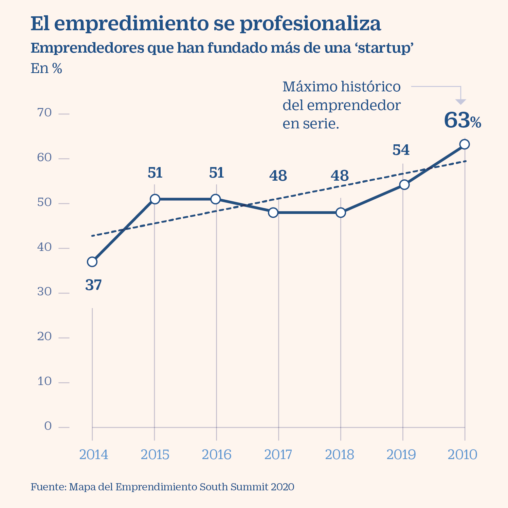
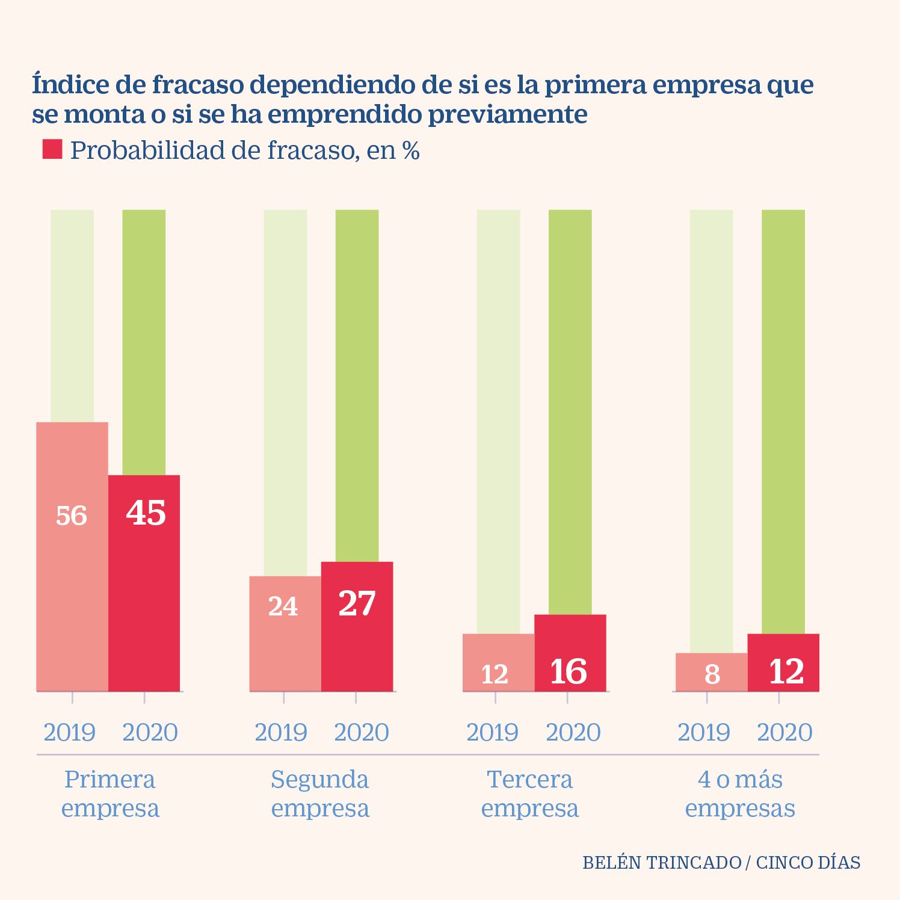

Existen un gran número de habilidades y cualidades sin las que un emprendedor va a tener muy difícil tener éxito en su aventura.
Tras consultar diversas fuentes, estas son algunas de las capacidades que un emprendedor debe poseer.
- Trabajo en equipo: Debe ser capaz de gestionar sus equipos y saber involucrar a sus compañeros en el proyecto.
- Iniciativa: Debe ser una persona que busque constantemente nuevas propuestas y mejoras para ofrecer un producto realmente innovador.
- Autodisciplina: Al no tener un jefe detrás exigiéndole, debe ser capaz por sí mismo de ser exigente con su propio trabajo.
- Autoconfianza: Debe confiar plenamente en sus propias capacidades para lograr el éxito.
- Adaptabilidad: Debe saber adaptarse a los posibles cambios que sufra tanto el entorno como su propia empresa.
- Empatía: Debe entender que su postura no es la única válida y que tiene que ponerse en el lugar de los demás.
- Espíritu positivo: Debe mantener una actitud optimista ante cualquier adversidad.
- Creatividad: Este es un aspecto clave, ya que le permitirá tanto crear nuevas ideas de negocio, así como nuevas formas de ejecutarlas o de enfocar los problemas.
- Sentido crítico: No debe ser autocomplaciente y debe saber identificar los puntos débiles de su proyecto, para mejorarlos.
- Asunción de riesgos: Sin llegar a ser un temerario, debe ser capaz de salir de su zona de confort y asumir riesgos.
- Perseverancia: Debe de ser constante para alcanzar sus objetivos. 
- Responsabilidad: No puede esconderse cuando las cosas salgan mal y debe asumir sus responsabilidades cuando sea necesario.
- Capacidad de decisión: Debe mostrar determinación a la hora de tomar decisiones.
- Capacidad de gestión y planificación: Debe ser capaz de utilizar de forma eficiente los recursos con los que cuenta, así como establecer metas y formas efectivas de trabajo.
- Conocimiento del mercado: Debe de tener una idea clara de cuál es su público objetivo, para así poder llegar a él y mantenerlo.
- Negociación: Debe ser capaz de lograr acuerdos beneficiosos tanto con sus clientes como con los proveedores que le suministran, ya que eso equivaldrá en mayores beneficios.
- Visión: Debe tener una visión de negocio especial, que le permita reconocer las oportunidades del mercado e incluso anticiparse a él.
- Pasión: Es imposible imaginarse a un emprendedor exitoso si no muestra pasión por lo que hace.
- Ambición: Debe tener un espíritu constante de superación para alcanzar mayores objetivos.
- Capacidad de resolución: Debe ser capaz de resolver los problemas y los conflictos de la forma más rápida y eficaz posible.
- Aprendizaje constante: Debe estar formándose constantemente, tanto en cuestiones de su sector como en su desarrollo personal. Deben ser capaces de escuchar y aprender para seguir creciendo.
- Búsqueda de resultados: Debe ser consciente que el objetivo final del proyecto es la obtención de beneficios. 